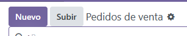
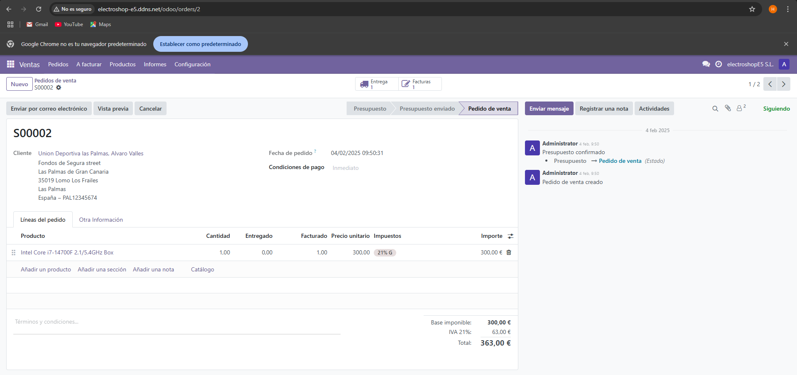
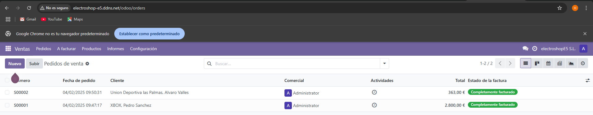

Paso 5.- Gestión de una venta: Pedidos de clientes
Asignado a Ulises Cuadrado García
Creación de ventas
En este apartado crearemos varias ventas utilizando los productos adquiridos anteriormente.
Lo primero que tendremos que hacer será llegar al apartado de las ventas y crear una nueva venta.


Ahora pasaremos a la propia creación de las ventas, cada una de ellas con productos y clientes diferentes.
La primera venta es hacia el cliente Pedro Sanchez y comprara un Ordenador AlienWare el cual adquirimos anteriormente y está en nuestro stock.

La segunda venta es hacia el cliente Alvaro Valles y comprara un procesador Intel Core I7 que al igual que el Ordenador AlienWare lo adquirimos previamente.

Una vez fijadas las ventas este sería el resultado final.
